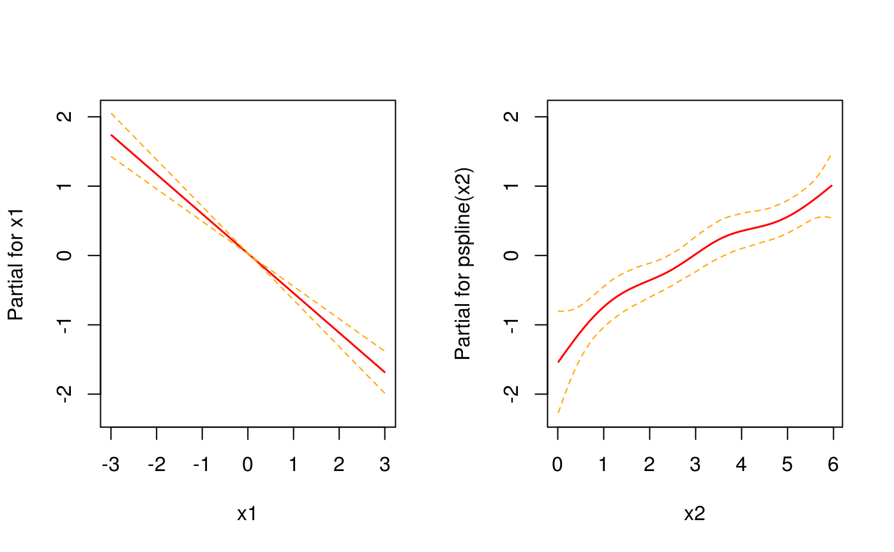

Simulate survival times from the piece-wise exponential distribution
Source:R/sim-pexp.R
sim_pexp.RdSimulate survival times from the piece-wise exponential distribution
sim_pexp(formula, data, cut)
Arguments
| formula | An extended formula that specifies the linear predictor.
If you want to include a smooth baseline
or time-varying effects, use |
|---|---|
| data | A data set with variables specified in |
| cut | A sequence of time-points starting with 0. |
Examples
#> #>#> #> #>#> #> #>#> #> #>library(pammtools) # set number of observations/subjects n <- 250 # create data set with variables which will affect the hazard rate. df <- cbind.data.frame(x1 = runif (n, -3, 3), x2 = runif (n, 0, 6)) %>% as_tibble() # the formula which specifies how covariates affet the hazard rate f0 <- function(t) { dgamma(t, 8, 2) *6 } form <- ~ -3.5 + f0(t) -0.5*x1 + sqrt(x2) set.seed(24032018) sim_df <- sim_pexp(form, df, 1:10) head(sim_df)#> # A tibble: 6 x 5 #> id time status x1 x2 #> <int> <dbl> <int> <dbl> <dbl> #> 1 1 1.000 1 -2.87 4.14 #> 2 2 4.20 1 1.20 5.61 #> 3 3 4.53 1 -0.951 2.46 #> 4 4 2.07 1 0.331 3.71 #> 5 5 3.02 1 2.98 4.98 #> 6 6 2.32 1 -1.91 1.43# for control, estimate with Cox PH mod <- coxph(Surv(time, status) ~ x1 + pspline(x2), data=sim_df) coef(mod)[1]#> x1 #> -0.5711059# and using PAMs layout(1) ped <- sim_df %>% as_ped(Surv(time, status)~., max_time=10) library(mgcv)#>#> #>#> #> #>#>#> x1 #> -0.5534093# NOT RUN { # Example 2: Functional covariates/cumulative coefficients # function to generate one exposure profile, tz is a vector of time points # at which TDC z was observed rng_z = function(nz) { as.numeric(arima.sim(n = nz, list(ar = c(.8, -.6)))) } # two different exposure times for two different exposures tz1 <- 1:10 tz2 <- -5:5 # generate exposures and add to data set df <- df %>% add_tdc(tz1, rng_z) %>% add_tdc(tz2, rng_z) df # define tri-variate function of time, exposure time and exposure z ft <- function(t, tmax) { -1*cos(t/tmax*pi) } fdnorm <- function(x) (dnorm(x,1.5,2)+1.5*dnorm(x,7.5,1)) wpeak2 <- function(lag) 15*dnorm(lag,8,10) wdnorm <- function(lag) 5*(dnorm(lag,4,6)+dnorm(lag,25,4)) f_xyz1 <- function(t, tz, z) { ft(t, tmax=10) * 0.8*fdnorm(z)* wpeak2(t - tz) } f_xyz2 <- function(t, tz, z) { wdnorm(t-tz) * z } # define lag-lead window function ll_fun <- function(t, tz) {t >= tz} ll_fun2 <- function(t, tz) {t - 2 >= tz} # simulate data with cumulative effect sim_df <- sim_pexp( formula = ~ -3.5 + f0(t) -0.5*x1 + sqrt(x2)| fcumu(t, tz1, z.tz1, f_xyz=f_xyz1, ll_fun=ll_fun) + fcumu(t, tz2, z.tz2, f_xyz=f_xyz2, ll_fun=ll_fun2), data = df, cut = 0:10) # }